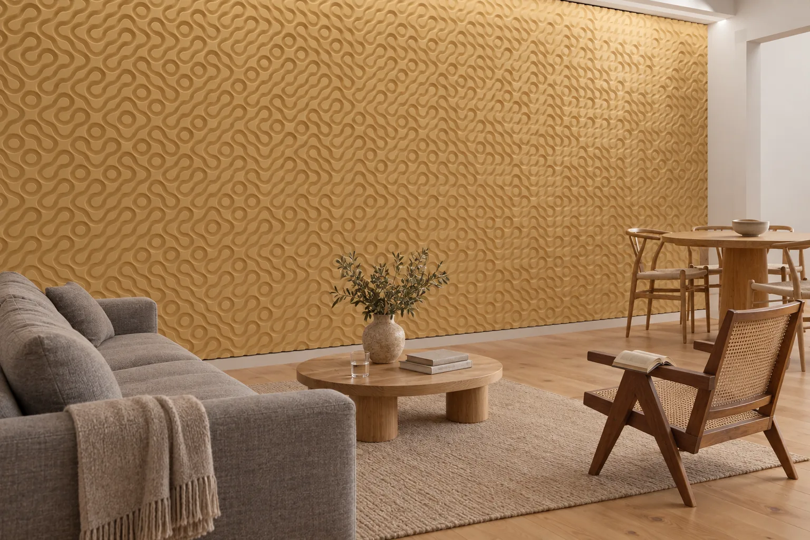

Bir villada, apartman dairesinde rastlanmayan duvarlar vardır: galeri boşluğunda iki kat yükselen bir duvar ve merdiveni izleyen uzun bir duvar. Bu yüzeyler çoğu projede yalnızca sıvanıp boyanır, oysa evin en büyük duvarlarıdır.
Rölyef bu duvarlara gölge katar; aynı yüzey sabah başka, akşam başka okunur. Bu rehber, villada rölyefin hangi duvarda kullanıldığını, gün ışığıyla nasıl okunduğunu ve seçimin hangi kararlara bağlı olduğunu ele alır.

Gün Işığında Rölyef
Villada rölyefin en iyi aydınlatıcısı çoğu zaman penceredir. Duvara dik duran büyük bir pencere, doğrudan güneş aldığı saatlerde yüzeyi yandan yalar; ışığın açısı değiştikçe gölgeler uzar, kısalır, yön değiştirir. Kuzeye bakan bir pencerenin dağınık ışığı ise rölyefi bu kadar belirginleştirmez.
Akşam bu işi yapay ışık devralır. Tavana gizlenen lineer bir armatür, duvarı 15–30 derecelik bir açıyla yaladığında rölyef yeniden belirginleşir; duvardan uzağa yerleştirilmiş spotlar ya da dağınık genel ışık ise yüzeyi düzleştirir. Bu yüzden duvar seçilirken pencerenin yeri ile akşam aydınlatması birlikte ele alınmalıdır.
Hangi Duvar, Hangi Rölyef
Salon. Kanepenin arkasındaki duvar, salona girerken ve odanın karşı ucundan, birkaç metre öteden görülür. Duvarı uçtan uca örten sakin bir doku burada iyi sonuç verir: Glissando’nun dikey lifleri ya da Melisma’nın ince labirenti gibi. İkisinin sayfasında da bir oturma odası render’ı yer alır.
Antre. Giriş duvarı kısa bir süre ve yakından görülür; tek başına duran bir panel burada odak olabilir. Panelin yüksekliği ve yeri, yerleşim çiziminde göz hizasına göre belirlenir.
Merdiven ve galeri boşluğu. İki kat boyunca yükselen bir duvar, derin bir rölyefin uzun gölgelerine yer açar. Fugato’nun 40 mm’lik olukları, tavana kadar çıkan ve ışığı yandan alan bir duvarda dikey gölge çizgileri olarak okunur. Küpeşte bu duvara bağlanacaksa bağlantı noktaları ve merdivenin net genişliği yerleşim çiziminde ele alınır.
Yatak odası. Konutta duvar otel odasındaki gibi her gün temizlenmez; bu yüzden yatak başında da derin bir rölyef seçilebilir. Misafir odaları için geçerli 10 mm sınırını otel odası duvar tasarımı rehberinde ayrıca ele aldık.
Atölye Tasarımı mı, Özel Üretim mi?
Atölye Tasarımları, bizim çizdiğimiz rölyeflerdir. Kalıp siparişinizle hazırlanır, dökümden önce ana modeli siz onaylarsınız; teslim süresi, 50 m²’ye kadar olan siparişlerde sözleşme ve peşinattan sonra 4 haftadır.
Duvar sizin çiziminizle başlıyorsa bu Özel Üretim’dir: nasıl çizdiyseniz öyle dökeriz. Evin mimarisinden alınan bir çizgi, bir aile motifi ya da bir eskiz başlamak için yeterlidir; teslim süresi en az 6 haftadır. Kavisli bir merdiven duvarını izleyen, bir kolonu saran ya da köşeyi dönen parçalar da aynı motifle Özel Üretim olarak dökülür. Duvarda Özel Üretim parçalar varsa takvim Özel Üretim süresine göre planlanır.
Duvarın Taşıyıcılığı
Paneller Lumina PMAG™ — Polimer Modifiye Kompozit Alçı ile dökülür ve ağırdır. 25 mm kalınlığındaki düz bir panelin ağırlığı metrekare başına yaklaşık 35–40 kg’dır; derin rölyefli paneller daha da ağırdır. Derin rölyefli paneller metal karkaslı alçıpan bir bölme duvarın taşıma kapasitesini aşabilir; bu yüzden duvarın türü proje başında netleştirilmelidir. Rakamları ağırlık ve taşıyıcı yük rehberinde topladık.
Parçalar duvara polimer yapıştırıcıyla, metal dikme ve alçıpan duvarlarda ise ray sistemiyle sabitlenir. Paneller iç mekân içindir; dış cephe ve sürekli ıslak kalan alanlar kapsam dışıdır.
Yüzey ve Renk
Parçalar boyaya hazır ya da artizan finish ile teslim edilir. Boyaya hazır yüzey yerinde evin rengine boyanır; artizan finish ise atölyede uygulanır. Rölyefi en iyi mat yüzeyler gösterir; parlak bir yüzeyde yansımalar gölgenin önüne geçer.
Her teslimatla birlikte bir yalama açısı spesifikasyonu gönderilir. Işık planını erken paylaşırsanız armatürün duvara uzaklığı ve açısı, asma tavan yapılmadan birlikte belirlenir.
Brief Nasıl Hazırlanır
Bir villa duvarı için brief’te şu bilgiler yeterlidir:
1. Duvar. Ölçüsü, yeri (salon, antre, merdiven ya da galeri boşluğu) ve türü (tuğla, gazbeton, betonarme ya da alçıpan); varsa bir fotoğrafı.
2. Işık. Pencerelerin yönü ve konumu, varsa aydınlatma planı.
3. Tasarım. Atölye Tasarımları’ndan bir tasarım ya da kendi çiziminiz.
4. Yüzey. Boyaya hazır mı, artizan finish mi; renk tercihi.
Bu bilgilerle bir yerleşim çizimi hazırlanır. Teslim şekli Sapanca’da fabrika teslimidir (EXW). Montajı, proje gerektirdiğinde Studio Luminant üstlenir ve ayrı bir kalem olarak fiyatlandırır.
Sık Sorulan Sorular
Villada rölyef en çok hangi duvarlarda kullanılır?
Kanepenin arkasındaki salon duvarında, girişteki antre duvarında, merdiveni izleyen duvarda ve galeri boşluğunda iki kat yükselen duvarda. Bu duvarlara gün boyunca yön değiştiren bir ışık düştüğü için rölyefin gölgesi de gün içinde değişir.
Konutta rölyef ne kadar derin olabilir?
Konutta, otel odalarındaki 10 mm sınırı yoktur. Atölye Tasarımları’nda derinliği verilen on iki tasarım 6 mm’den (Ricercar) 40 mm’ye (Fugato) uzanır. Derin rölyefli paneller daha ağırdır, bu yüzden duvarın taşıyıcılığı proje başında kontrol edilmelidir.
Kavisli bir merdiven duvarına rölyef uygulanabilir mi?
Evet, Özel Üretim olarak. Kavisli bir duvarı izleyen, bir kolonu saran ya da köşeyi dönen parçalar aynı motifle Özel Üretim olarak dökülür; teslim süresi en az 6 haftadır.
Teslim süresi ne kadar, paneller duvara nasıl sabitlenir?
Atölye Tasarımları 50 m²’ye kadar olan siparişlerde sözleşme ve peşinattan sonra 4 haftada, Özel Üretim en az 6 haftada teslim edilir; teslim şekli Sapanca’da fabrika teslimidir (EXW). Parçalar duvara polimer yapıştırıcıyla, metal dikme ve alçıpan duvarlarda ise ray sistemiyle sabitlenir; montajı, proje gerektirdiğinde Studio Luminant üstlenir ve ayrı bir kalem olarak fiyatlandırır.
Villa Projenizi Anlatın
Mekânı, duvar ölçülerini ve takvimi yazın; okuyup size yazalım.
Çiziminizi gönderin